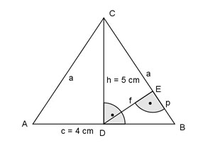

Aufgabe 56 Wie groß sind für das gleichschenklige Dreieck der Schenkel a und die Strecke f?  AD = c/2 = 4 cm/2 = 2 cm Satz von Pythagoras im Dreieck ADC: a2 = AD2 + h2 a2 = 22 cm2 + 52 cm2 = 29 cm2 |√ a = 5,4 cm Satz von Pythagoras im Dreieck DBE: (c/2)2 = f2 + p2 | -p2 f2 = (c/2)2 - p2 f2 = (4/2)2 - p2 = 4 - p2 Satz von Pythagoras im Dreieck CDE: h2 = f2 + (a - p)2 52 = 4 - p2 + (5,4 - p)2 25 = 4 - p2 + 29,16 - 10,8 * p + p2 25 = 33,16 - 10,8 * p |+ 10,8 * p 25 + 10,8 * p = 33,16 |-25 10,8 * p = 8,16 |:10,8 p = 0,76 cm f2 = 4 - 0,762 = 4 - 0,58 = 3,42 cm2 |√ f = 1,85 cm